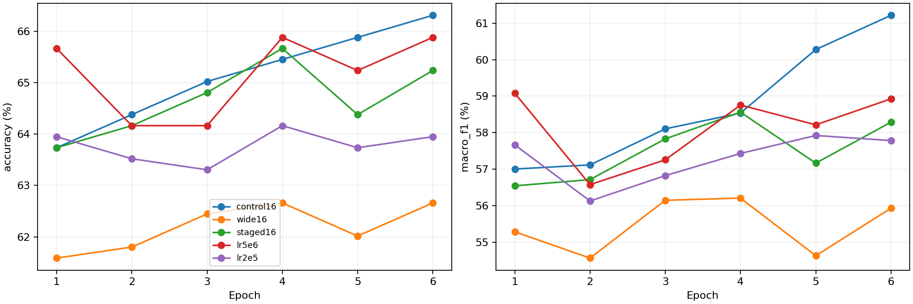

02 / DEEP LEARNING↗
03 / 10
手写数字识别
使用 PyTorch 编写小型 CNN，练习数据加载、训练循环、模型保存与重新加载。
95.87%MNIST 测试集 · 9,587 / 10,000
5,000 张训练样本，训练 3 轮
代码与结果 ↗5,000 张训练样本，训练 3 轮
PERSONAL LEARNING & BUILD LOG
你好，我是 ITKNOW。这里记录我在 AI、计算机视觉和嵌入式工程里的学习、实验与小成果。
不止记录结果，
也记录怎么走到这里。
01 / SELECTED WORK
从一个小模型到完整的比赛实验，从软件算法到嵌入式工程。每个数字都尽可能连接到它的出处。
围绕深度图与红外图，建立训练、验证、错误分析和离线推理流程；尝试 R(2+1)D、Swin、MViT、X3D、TSM、UniFormer 和 C3D 等方案。
318/466；多次使用验证集选择方案，存在选择偏差。隐藏测试结果未知，官方 Linux 环境尚未验证。
查看实验与源码 ↗
对照实验中的训练曲线 · 来自实际运行记录
使用 PyTorch 编写小型 CNN，练习数据加载、训练循环、模型保存与重新加载。
调用 Ultralytics 官方预训练模型，对官方示例图像完成检测，理解类别、置信度和边界框。
STM32F103 工程包含信号处理、显示、按键和校准逻辑；通过编译及主机端软件测试。
02 / THE LEARNING PATH
这些是已有的练习与路线材料，不把资料齐全当成课程已经完成。
Python 基础、C 语言、命令行、VS Code，以及读取文件与排查错误。
PYTHON · C · GIT从 NumPy、图像与张量出发，理解卷积、梯度、训练循环和 LIF 神经元。
NUMPY · PYTORCH · SNN整理数据，比较模型，观察准确率与 Macro F1，并记录失败和局限。
DATA · METRICS · EVALUATION整理依赖、离线推理与复现说明；同时探索 STM32 程序与软件测试。
INFERENCE · EMBEDDED13 节课程和参考答案已整理为学习材料，进度尚待本人确认。
打开学习材料 ↗03 / OPEN NOTEBOOK
好的实验不只展示最好的一次，也需要保留方法、对比条件与尚未解决的问题。